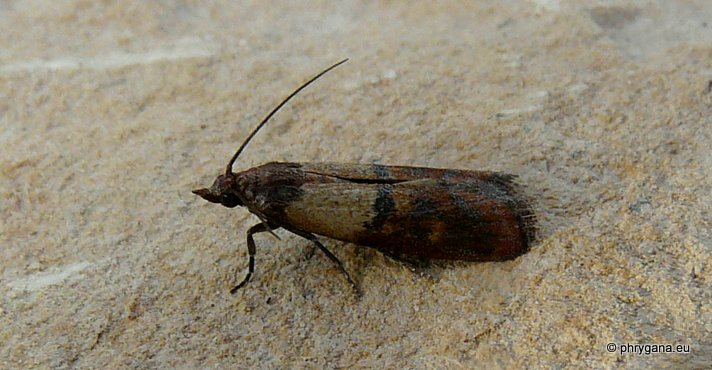
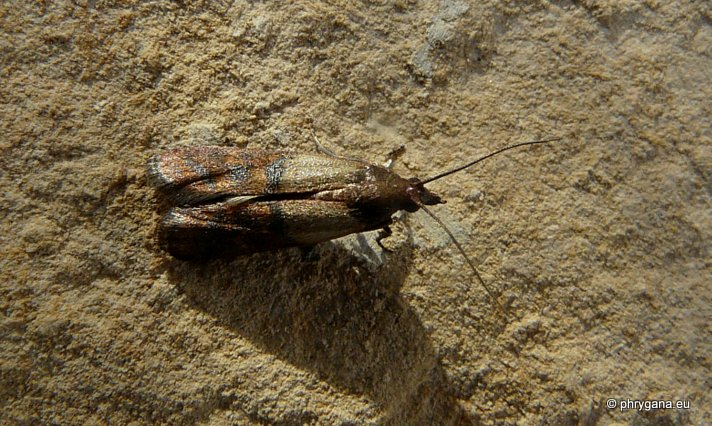

| PHRYGANA | Fauna | Flora | Galles | liste des espèces |
contact -
info - commentaires phrygana1 (at) gmail.com |
| Particularités crétoises | nouveautés | Mines | ressources naturelles |
| Plodia interpunctella (Hubner 1813) |
| 389 | Fauna | PYRALIDAE | Phycitinae | Plodia Guenée 1845 |
|
 Plodia interpunctella Melambes (Agios Giorgos) 15 avril 2011 |
| Indian meal moth -- la Pyrale des fruits secs |
| Envergure entre 16 - 20 mm. Couleur de fond des ailes antérieures brun ferrugineux; aire basale ocre blanchâtre; lignes transversales brun foncé; ailes postérieuresblanchâtres; pattes brun foncé; tête brun ferrugineux |
| Espèce multivoltine avec période principale de vol en été |
| Larve polyphage sur toutes céréales et farines, fruits secs, épices, aliments secs pour animaux de compagnie: elles rongent surtout la surface |
| Oeufs blanchâtres, nombreux (jusque 400); développement entre 4 et 30 semaines; nymphose souvent dans un cocon de soie |
| Statut en Crète: indigène |
| Biotopes en Crète: maisons, entrepôts, fermes |
| Distribution: Europe, Asie , Amériques; espèce devnue cosmopolite |
| Note: vient à la lumière. |
|
 Plodia interpunctella Melambes (Agios Giorgos) 15 avril 2011 |
| 15 août 2012 |
| © paul fontaine -- © Phrygana.eu 2007 -- 2013 |